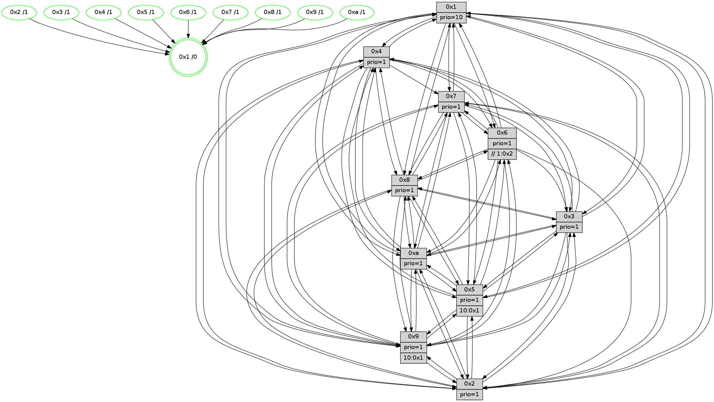

>> << IDX [start] -100 -25 -5 +0 +5 +25 +100 [1515.21632814]
 Previous packets
----------------------------------------------------------------------
1510.487537 beacon01(faad) #0 coord=01,02,03,04,05,06,07,0a,09,08 cycle=688.0ms assoc
-- color-indic=1 64 40 43
1510.497519 beacon02(faad) #0 coord=01,02,03,04,05,06,07,0a,09,08 cycle=688.0ms assoc 64 d3 72
1510.507518 beacon03(faad) #0 coord=01,02,03,04,05,06,07,0a,09,08 cycle=688.0ms assoc 64 a9 3f
1510.517519 beacon04(faad) #0 coord=01,02,03,04,05,06,07,0a,09,08 cycle=688.0ms assoc 64 de d5
1510.527519 beacon05(faad) #0 coord=01,02,03,04,05,06,07,0a,09,08 cycle=688.0ms assoc 64 a4 98
1510.537520 beacon06(faad) #0 coord=01,02,03,04,05,06,07,0a,09,08 cycle=688.0ms assoc 64 2a 4f
1510.547522 beacon07(faad) #0 coord=01,02,03,04,05,06,07,0a,09,08 cycle=688.0ms assoc 64 50 02
1510.557525 beacon0a(faad) #0 coord=01,02,03,04,05,06,07,0a,09,08 cycle=688.0ms assoc 64 21 09
1510.567526 beacon09(faad) #0 coord=01,02,03,04,05,06,07,0a,09,08 cycle=688.0ms assoc 64 af de
1510.577526 beacon08(faad) #0 coord=01,02,03,04,05,06,07,0a,09,08 cycle=688.0ms assoc 64 d5 93
1510.590988 [Hello(1): seq=872 sym=4,2,9,5,10,3,8,6,7 sysInfo=coloring-mode-on,ColoringModeRequestCalled stat=4:14,7,7,4/2:13,7,15,7/9:3,5,0,3/5:7,15,7,11/10:14,9,9,8/3:7,8,6,13/8:9,4,3,6/6:0,1,3,3/7:0,7,10,3]
1510.594340 [Color(9) seq=506 @0:0 prio=1 >10.@1,1.@2,1.@3,1.@4]
1510.595953 [Hello(6): seq=963 sym=3,2,5,4,7,9,8,10,1 sysInfo=hasWarning stat=3:5,9,9,0/2:11,1,3,1/5:12,14,14,6/4:12,1,6,9/7:9,8,3,1/9:0,7,7,12/8:13,14,14,9/10:1,4,1,13/1:3,1,9,1]
1510.599075 [Color(6) seq=595 @0:0 prio=1 >>1.@2,1.@3,1.@4]
1510.604622 [STC(1) #0.268 tree-change,inconsistent-stability,stable,to-color d=0]
1510.606779 [Hello(5): seq=963 sym=7,6,4,3,1,9,8,10,2 sysInfo=hasWarning stat=7:7,8,11,1/6:8,0,2,0/4:2,15,2,0/3:3,2,5,3/1:0,2,2,0/9:0,3,8,12/8:11,7,1,7/10:10,12,12,9/2:6,11,2,9]
1510.610227 [Color(5) seq=499 @0:0 prio=1 >10.@1,1.@2,1.@3,1.@4]
1510.613310 [Hello(2): seq=959 sym=4,5,7,3,9,8,10,1 sysInfo=hasWarning stat=4:12,5,6,14/5:7,1,10,4/7:13,7,9,3/3:8,11,9,2/9:11,6,0,11/8:7,4,2,15/10:11,5,0,11/1:10,0,3,0]
1510.616958 [Hello(3): seq=963 sym=1,7,2,4,8,9,10,5 sysInfo=hasWarning stat=1:0,13,11,0/7:14,4,10,0/2:0,2,0,0/4:0,9,13,14/8:3,5,3,8/9:10,2,3,2/10:9,1,9,5/5:8,2,5,3]
1510.619436 [Color(10) seq=552 @0:0 prio=1]
1510.620925 [Color(2) seq=539 @0:0 prio=1]
1510.624569 [Color(3) seq=592 @0:0 prio=1]
----------------------------------------------------------------------
1511.275671 beacon01(faad) #0 coord=01,02,03,04,05,06,07,0a,09,08 cycle=688.0ms assoc
-- color-indic=1 64 fc 46
1511.285653 beacon02(faad) #0 coord=01,02,03,04,05,06,07,0a,09,08 cycle=688.0ms assoc 64 6f 77
1511.295653 beacon03(faad) #0 coord=01,02,03,04,05,06,07,0a,09,08 cycle=688.0ms assoc 64 15 3a
1511.305654 beacon04(faad) #0 coord=01,02,03,04,05,06,07,0a,09,08 cycle=688.0ms assoc 64 62 d0
1511.315655 beacon05(faad) #0 coord=01,02,03,04,05,06,07,0a,09,08 cycle=688.0ms assoc 64 18 9d
1511.325656 beacon06(faad) #0 coord=01,02,03,04,05,06,07,0a,09,08 cycle=688.0ms assoc 64 96 4a
1511.335655 beacon07(faad) #0 coord=01,02,03,04,05,06,07,0a,09,08 cycle=688.0ms assoc 64 ec 07
1511.345659 beacon0a(faad) #0 coord=01,02,03,04,05,06,07,0a,09,08 cycle=688.0ms assoc 64 9d 0c
1511.365660 beacon08(faad) #0 coord=01,02,03,04,05,06,07,0a,09,08 cycle=688.0ms assoc 64 69 96
1511.376939 [STC(6)->1 #0.268 tree-change,inconsistent-stability,stable,to-color d=1]
1511.378807 [Hello(10): seq=896 sym=6,2,3,8,7,5,9,4,1 sysInfo=hasWarning stat=6:15,14,8,5/2:15,6,10,2/3:5,13,2,15/8:15,15,12,5/7:11,8,9,10/5:4,7,4,3/9:15,7,10,2/4:12,11,7,3/1:4,4,8,1]
1511.382805 [Hello(7): seq=963 sym=2,3,5,6,8,4,9,10,1 sysInfo=hasWarning stat=2:8,10,5,6/3:13,3,8,6/5:14,3,7,5/6:2,0,6,13/8:5,10,0,0/4:1,4,1,0/9:13,3,1,3/10:6,0,14,7/1:8,1,5,0]
1511.386840 [Hello(8): seq=907 sym=5,2,3,7,9,6,4,10,1 sysInfo=hasWarning stat=5:12,6,3,3/2:3,6,14,14/3:11,8,2,6/7:2,3,1,1/9:9,10,3,6/6:5,7,15,1/4:9,15,10,2/10:1,8,10,5/1:0,0,10,0]
1511.389673 [STC(8)->1 #0.268 tree-change,inconsistent-stability,stable,to-color d=1]
1511.392918 [Color(8) seq=562 @0:0 prio=1]
1511.394602 [Color(1) seq=643 @0:0 prio=10]
1511.397105 [Hello(4): seq=963 sym=5,8,6,2,3,9,7,10,1 sysInfo=hasWarning stat=5:10,3,5,4/8:11,4,1,0/6:2,14,1,2/2:2,15,8,3/3:15,9,15,1/9:13,3,10,3/7:1,3,0,0/10:2,8,1,14/1:10,10,10,1]
1511.401837 [STC(4)->1 #0.268 tree-change,inconsistent-stability,stable,to-color d=1]
1511.403630 [STC(7)->1 #0.268 tree-change,inconsistent-stability,stable,to-color d=1]
1511.406347 [Hello(9): seq=907 sym=2,5,3,4,7,6,8,10,1 sysInfo=hasWarning stat=2:13,13,11,13/5:0,2,3,0/3:8,2,7,7/4:7,10,3,3/7:3,3,3,5/6:12,14,9,1/8:5,3,1,8/10:13,13,4,0/1:2,14,9,1]
1511.409808 [STC(9)->1 #0.268 tree-change,inconsistent-stability,stable,to-color d=1]
1511.416744 [Color(7) seq=491 @0:0 prio=1]
1511.418148 [Color(4) seq=502 @0:0 prio=1]
----------------------------------------------------------------------
1512.063804 beacon01(faad) #0 coord=01,02,03,04,05,06,07,0a,09,08 cycle=688.0ms assoc
-- color-indic=1 64 e8 28
1512.073786 beacon02(faad) #0 coord=01,02,03,04,05,06,07,0a,09,08 cycle=688.0ms assoc 64 7b 19
1512.083787 beacon03(faad) #0 coord=01,02,03,04,05,06,07,0a,09,08 cycle=688.0ms assoc 64 01 54
1512.093786 beacon04(faad) #0 coord=01,02,03,04,05,06,07,0a,09,08 cycle=688.0ms assoc 64 76 be
1512.103786 beacon05(faad) #0 coord=01,02,03,04,05,06,07,0a,09,08 cycle=688.0ms assoc 64 0c f3
1512.113787 beacon06(faad) #0 coord=01,02,03,04,05,06,07,0a,09,08 cycle=688.0ms assoc 64 82 24
1512.123789 beacon07(faad) #0 coord=01,02,03,04,05,06,07,0a,09,08 cycle=688.0ms assoc 64 f8 69
1512.133792 beacon0a(faad) #0 coord=01,02,03,04,05,06,07,0a,09,08 cycle=688.0ms assoc 64 89 62
1512.143793 beacon09(faad) #0 coord=01,02,03,04,05,06,07,0a,09,08 cycle=688.0ms assoc 64 07 b5
1512.153794 beacon08(faad) #0 coord=01,02,03,04,05,06,07,0a,09,08 cycle=688.0ms assoc 64 7d f8
1512.165683 [Hello(1): seq=873 sym=4,2,9,5,10,3,8,6,7 sysInfo=coloring-mode-on,ColoringModeRequestCalled stat=4:15,8,8,4/2:14,8,15,7/9:4,5,1,3/5:8,0,7,11/10:15,10,9,8/3:8,9,6,13/8:9,4,3,6/6:0,1,4,3/7:0,8,11,3]
1512.168412 [Hello(5): seq=964 sym=7,6,4,3,1,9,8,10,2 sysInfo=hasWarning stat=7:8,9,12,1/6:8,0,3,0/4:3,0,3,0/3:4,3,5,3/1:1,3,2,0/9:1,3,9,12/8:12,8,2,7/10:11,13,12,9/2:7,12,2,9]
1512.175113 [Color(2) seq=540 @0:0 prio=1]
1512.176355 [Color(9) seq=507 @0:0 prio=1 >10.@1,1.@2,1.@3,1.@4]
1512.178242 [Color(6) seq=596 @0:0 prio=1 >>1.@2,1.@3,1.@4]
1512.180485 [Color(5) seq=500 @0:0 prio=1 >10.@1,1.@2,1.@3,1.@4]
1512.184006 [Hello(3): seq=964 sym=1,7,2,4,8,9,10,5 sysInfo=hasWarning stat=1:1,14,11,0/7:15,5,11,0/2:0,2,0,0/4:1,10,14,14/8:4,6,4,8/9:11,2,4,2/10:10,1,9,5/5:8,2,5,3]
1512.186315 [Color(10) seq=553 @0:0 prio=1]
1512.188726 [Color(3) seq=593 @0:0 prio=1]
----------------------------------------------------------------------
1512.851936 beacon01(faad) #0 coord=01,02,03,04,05,06,07,0a,09,08 cycle=688.0ms assoc
-- color-indic=1 64 54 2d
1512.861918 beacon02(faad) #0 coord=01,02,03,04,05,06,07,0a,09,08 cycle=688.0ms assoc 64 c7 1c
1512.871919 beacon03(faad) #0 coord=01,02,03,04,05,06,07,0a,09,08 cycle=688.0ms assoc 64 bd 51
1512.881918 beacon04(faad) #0 coord=01,02,03,04,05,06,07,0a,09,08 cycle=688.0ms assoc 64 ca bb
1512.891919 beacon05(faad) #0 coord=01,02,03,04,05,06,07,0a,09,08 cycle=688.0ms assoc 64 b0 f6
1512.901920 beacon06(faad) #0 coord=01,02,03,04,05,06,07,0a,09,08 cycle=688.0ms assoc 64 3e 21
1512.911919 beacon07(faad) #0 coord=01,02,03,04,05,06,07,0a,09,08 cycle=688.0ms assoc 64 44 6c
1512.921923 beacon0a(faad) #0 coord=01,02,03,04,05,06,07,0a,09,08 cycle=688.0ms assoc 64 35 67
1512.941925 beacon08(faad) #0 coord=01,02,03,04,05,06,07,0a,09,08 cycle=688.0ms assoc 64 c1 fd
1512.953140 [Hello(10): seq=897 sym=6,2,3,8,7,5,9,4,1 sysInfo=hasWarning stat=6:15,14,8,5/2:15,6,10,2/3:5,14,2,15/8:0,0,13,5/7:12,9,10,10/5:4,7,4,3/9:0,7,11,2/4:13,12,8,3/1:5,5,8,1]
1512.958536 [Color(1) seq=644 @0:0 prio=10]
1512.959804 [Hello(9): seq=908 sym=2,5,3,4,7,6,8,10,1 sysInfo=hasWarning stat=2:13,13,11,13/5:0,3,3,0/3:9,3,7,7/4:7,11,3,3/7:3,4,3,5/6:12,15,9,1/8:5,3,1,8/10:13,13,4,0/1:3,14,9,1]
1512.965374 [Hello(8): seq=908 sym=5,2,3,7,9,6,4,10,1 sysInfo=hasWarning stat=5:13,7,3,3/2:4,7,14,14/3:12,9,2,6/7:2,4,2,1/9:10,11,4,6/6:5,8,0,1/4:10,0,11,2/10:2,8,10,5/1:1,1,10,0]
1512.969289 [Hello(4): seq=964 sym=5,8,6,2,3,9,7,10,1 sysInfo=hasWarning stat=5:11,4,5,4/8:11,4,1,0/6:2,15,2,2/2:3,0,8,3/3:0,10,15,1/9:13,4,10,3/7:1,3,0,0/10:3,8,1,14/1:11,10,10,1]
1512.972730 [Color(4) seq=503 @0:0 prio=1]
1512.980509 [Hello(7): seq=964 sym=2,3,5,6,8,9,10,1 sysInfo=hasWarning stat=2:8,11,5,6/3:14,4,8,6/5:15,4,7,5/6:3,1,7,13/8:5,10,0,0/9:13,4,1,3/10:7,0,14,7/1:9,1,5,0]
1512.983831 [Color(7) seq=492 @0:0 prio=1]
1512.990374 [Color(8) seq=563 @0:0 prio=1]
----------------------------------------------------------------------
1513.640067 beacon01(faad) #0 coord=01,02,03,04,05,06,07,0a,09,08 cycle=688.0ms assoc
-- color-indic=1 64 90 23
1513.650050 beacon02(faad) #0 coord=01,02,03,04,05,06,07,0a,09,08 cycle=688.0ms assoc 64 03 12
1513.660048 beacon03(faad) #0 coord=01,02,03,04,05,06,07,0a,09,08 cycle=688.0ms assoc 64 79 5f
1513.670049 beacon04(faad) #0 coord=01,02,03,04,05,06,07,0a,09,08 cycle=688.0ms assoc 64 0e b5
1513.680051 beacon05(faad) #0 coord=01,02,03,04,05,06,07,0a,09,08 cycle=688.0ms assoc 64 74 f8
1513.690049 beacon06(faad) #0 coord=01,02,03,04,05,06,07,0a,09,08 cycle=688.0ms assoc 64 fa 2f
1513.700051 beacon07(faad) #0 coord=01,02,03,04,05,06,07,0a,09,08 cycle=688.0ms assoc 64 80 62
1513.710057 beacon0a(faad) #0 coord=01,02,03,04,05,06,07,0a,09,08 cycle=688.0ms assoc 64 f1 69
1513.720055 beacon09(faad) #0 coord=01,02,03,04,05,06,07,0a,09,08 cycle=688.0ms assoc 64 7f be
1513.730055 beacon08(faad) #0 coord=01,02,03,04,05,06,07,0a,09,08 cycle=688.0ms assoc 64 05 f3
1513.741961 [Hello(1): seq=874 sym=4,2,9,5,10,3,8,6,7 sysInfo=coloring-mode-on,ColoringModeRequestCalled stat=4:0,9,8,4/2:14,9,15,7/9:5,6,1,3/5:9,1,7,11/10:0,10,9,8/3:9,10,6,13/8:10,5,3,6/6:1,2,4,3/7:1,9,11,3]
1513.744687 [Color(9) seq=508 @0:0 prio=1 >10.@1,1.@2,1.@3,1.@4]
1513.746600 [Hello(5): seq=965 sym=7,6,4,3,1,9,8,10,2 sysInfo=hasWarning stat=7:9,10,12,1/6:8,0,3,0/4:4,1,3,0/3:5,4,5,3/1:2,4,2,0/9:2,3,9,12/8:13,9,2,7/10:12,13,12,9/2:7,12,2,9]
1513.749957 [Color(10) seq=554 @0:0 prio=1]
1513.751679 [Color(5) seq=501 @0:0 prio=1 >10.@1,1.@2,1.@3,1.@4]
1513.755130 [Hello(2): seq=961 sym=4,5,7,3,9,8,10,1 sysInfo=hasWarning stat=4:14,7,7,14/5:8,2,10,4/7:15,9,10,3/3:9,13,9,2/9:13,7,1,11/8:9,6,3,15/10:13,5,0,11/1:12,2,3,0]
1513.757844 [Color(2) seq=541 @0:0 prio=1]
1513.765192 [Hello(3): seq=965 sym=1,7,2,4,8,9,10,5 sysInfo=hasWarning stat=1:2,15,11,0/7:0,6,11,0/2:0,2,0,0/4:2,11,14,14/8:5,7,4,8/9:12,2,4,2/10:11,2,9,5/5:9,2,5,3]
1513.769057 [Hello(6): seq=965 sym=3,2,5,4,7,9,8,10,1 sysInfo=hasWarning stat=3:7,11,9,0/2:12,2,3,1/5:14,0,14,6/4:14,3,7,9/7:11,10,4,1/9:2,7,8,12/8:15,0,15,9/10:3,5,1,13/1:5,3,10,1]
1513.772213 [Color(6) seq=597 @0:0 prio=1 >>1.@2,1.@3,1.@4]
1513.773795 [Color(3) seq=594 @0:0 prio=1]
----------------------------------------------------------------------
1514.428197 beacon01(faad) #0 coord=01,02,03,04,05,06,07,0a,09,08 cycle=688.0ms assoc
-- color-indic=1 64 2c 26
1514.438180 beacon02(faad) #0 coord=01,02,03,04,05,06,07,0a,09,08 cycle=688.0ms assoc 64 bf 17
1514.448180 beacon03(faad) #0 coord=01,02,03,04,05,06,07,0a,09,08 cycle=688.0ms assoc 64 c5 5a
1514.458180 beacon04(faad) #0 coord=01,02,03,04,05,06,07,0a,09,08 cycle=688.0ms assoc 64 b2 b0
1514.468181 beacon05(faad) #0 coord=01,02,03,04,05,06,07,0a,09,08 cycle=688.0ms assoc 64 c8 fd
1514.478181 beacon06(faad) #0 coord=01,02,03,04,05,06,07,0a,09,08 cycle=688.0ms assoc 64 46 2a
1514.488182 beacon07(faad) #0 coord=01,02,03,04,05,06,07,0a,09,08 cycle=688.0ms assoc 64 3c 67
1514.498186 beacon0a(faad) #0 coord=01,02,03,04,05,06,07,0a,09,08 cycle=688.0ms assoc 64 4d 6c
1514.518185 beacon08(faad) #0 coord=01,02,03,04,05,06,07,0a,09,08 cycle=688.0ms assoc 64 b9 f6
1514.529416 [Hello(9): seq=909 sym=2,5,3,4,7,6,8,10,1 sysInfo=hasWarning stat=2:14,14,11,13/5:1,4,3,0/3:10,4,7,7/4:8,12,3,3/7:4,5,3,5/6:13,0,9,1/8:6,4,1,8/10:13,14,4,0/1:4,14,9,1]
1514.533714 [Hello(10): seq=898 sym=6,2,3,8,7,5,9,4,1 sysInfo=hasWarning stat=6:0,15,8,5/2:0,7,10,2/3:6,15,2,15/8:1,1,13,5/7:13,10,10,10/5:4,8,4,3/9:1,7,11,2/4:14,13,8,3/1:6,6,8,1]
1514.536457 [Hello(4): seq=965 sym=5,8,6,2,3,9,7,10,1 sysInfo=hasWarning stat=5:12,5,5,4/8:11,5,1,0/6:3,0,2,2/2:4,1,8,3/3:1,11,15,1/9:13,5,10,3/7:2,4,0,0/10:4,9,1,14/1:12,10,10,1]
1514.540037 [Hello(8): seq=909 sym=5,2,3,7,9,6,4,10,1 sysInfo=hasWarning stat=5:14,8,3,3/2:5,8,14,14/3:13,10,2,6/7:2,4,2,1/9:10,12,4,6/6:6,9,0,1/4:10,0,11,2/10:3,9,10,5/1:2,1,10,0]
1514.544769 [Hello(7): seq=965 sym=2,3,5,6,8,9,10,1 sysInfo=hasWarning stat=2:9,12,5,6/3:15,5,8,6/5:0,5,7,5/6:4,2,7,13/8:5,11,0,0/9:13,5,1,3/10:8,1,14,7/1:10,1,5,0]
1514.549363 [Color(7) seq=493 @0:0 prio=1]
1514.552496 [Color(4) seq=504 @0:0 prio=1]
1514.558957 [STC(1) #0.269 tree-change,inconsistent-stability,stable,to-color d=0]
1514.561244 [Color(1) seq=645 @0:0 prio=10]